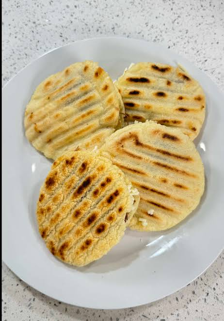
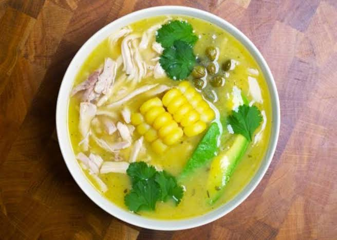
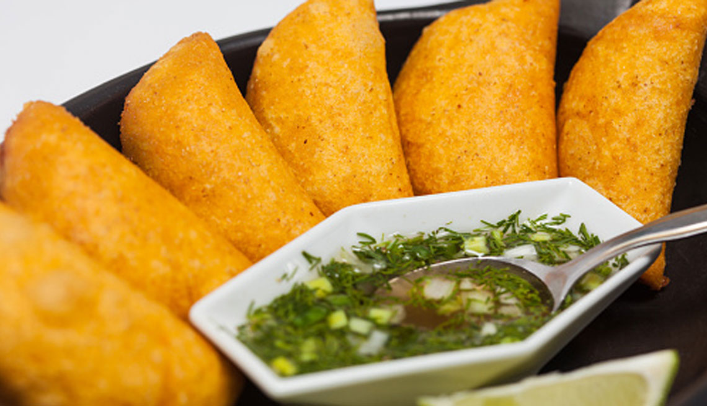
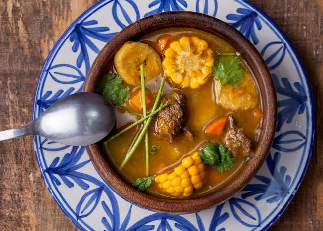
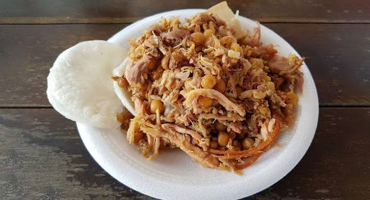

Colombian Gastronomy

Bandeja Paisa
One of the most representative dishes of the country, prepared with rice, beans, meat, egg, chorizo, and avocado.

Arepas
A traditional food made from corn that accompanies most Colombian meals.

Ajiaco
A traditional soup from Bogotá prepared with chicken, potatoes, and corn on the cob.

Empanadas
Delicious street food filled with meat, chicken, or potatoes.

Sancocho
A traditional, thick, and hearty soup made with meat, green plantain, cassava, potatoes, and corn on the cob, seasoned with cilantro and garlic.

Lechona
Roasted pork stuffed with pork meat and peas, served with an arepa or insulso.